A-10 导出制造文件与下单
设计完成！最后一步是把设计变成工厂看得懂的文件：Gerber（每一层的“底片”）、BOM（元件清单）、坐标文件（贴片机用），然后一键跳到嘉立创下单页，逐项看懂每个参数。⚠️ 本教程只操作到下单页面，没有提交订单。
A10.1 导出菜单一览#
在 PCB 编辑器里点菜单「导出」：
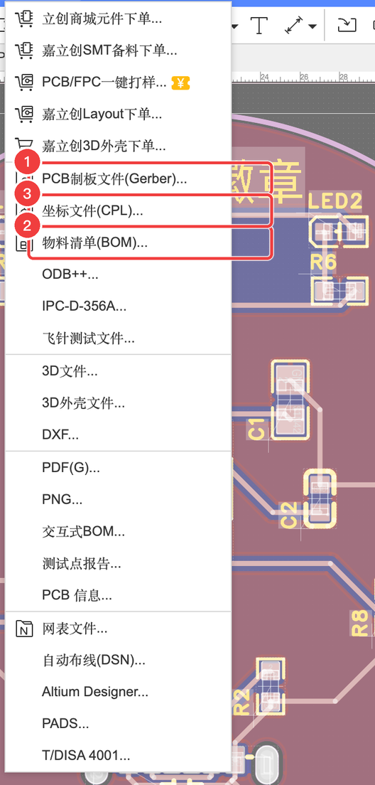
菜单上半部分是各种“一键下单”入口（立创商城元件下单、嘉立创SMT备料下单、PCB/FPC一键打样、Layout 下单、3D 外壳下单），下半部分是各种文件格式。本例只需要最常用的三个：
| 文件 | 给谁用 | 大白话 |
|---|---|---|
| Gerber（PCB 制板文件） | PCB 工厂 | 每一层的“底片”：铜在哪、绿油在哪开窗、丝印印什么、孔打在哪、板子切成什么形状 |
| BOM（物料清单） | 采购 / 贴片工厂 | 要用哪些元件、每种几个、C 编号是多少 |
| 坐标文件（CPL / Pick and Place） | 贴片工厂 | 每个元件放在板子的哪个坐标、转多少度、在哪一面 |
A10.2 导出 Gerber#
- 「导出」→「PCB制板文件(Gerber)…」
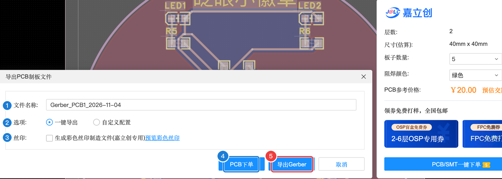
导出 PCB 制板文件（Gerber）
| 编号 | 属性 | 含义（大白话） | 本例怎么填 | 什么时候需要改 |
|---|---|---|---|---|
| 1 | 文件名称 | 导出的压缩包名字 | Gerber_PCB1_日期 | 随意 |
| 2 | 选项 | 「一键导出」按嘉立创的默认配置导出所有需要的层；「自定义配置」可以自己选导出哪些层、什么格式 | 一键导出 | 给其他工厂、有特殊要求时 |
| 3 | 丝印 | 生成彩色丝印制造文件（嘉立创专用）/ 预览彩色丝印 | 不勾 | 做彩色丝印时 |
| 4 | PCB下单 | 直接生成下单数据并跳到嘉立创下单页（A10.5 用这个） | — | — |
| 5 | 导出Gerber | 只下载文件到电脑 | 点它 | — |
| 取消 | 关掉 | — | — | |
| 右侧价格栏 | 层数 2、尺寸 40×40、数量 5、阻焊颜色、参考价 ¥20 | 自动 | — |
- 点「导出Gerber」，会先问你要不要再检查一次 DRC
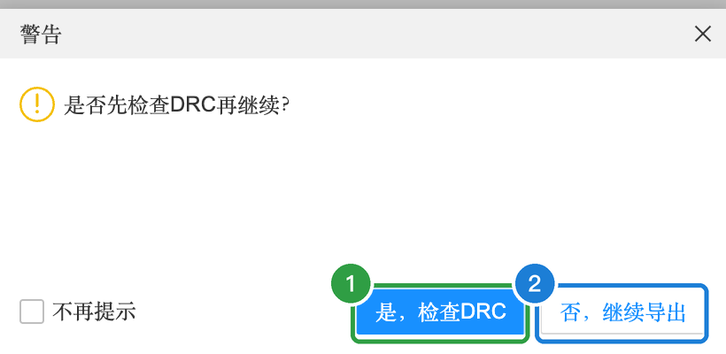
- 浏览器下载一个 zip 压缩包（本例 38 KB），并弹出“Gerber 导出成功”
压缩包里有什么#
解压后是十几个文件，每个对应板子的一层或一种加工信息。对照 A-4 的层叠图 看：
| 文件 | 内容 | 对应图层 |
|---|---|---|
Gerber_TopLayer.GTL | 顶层铜（导线、焊盘、铺铜） | 1 |
Gerber_BottomLayer.GBL | 底层铜 | 2 |
Gerber_TopSilkscreenLayer.GTO / …BottomSilkscreenLayer.GBO | 顶层 / 底层丝印 | 3 / 4 |
Gerber_TopSolderMaskLayer.GTS / …BottomSolderMaskLayer.GBS | 顶层 / 底层阻焊（开窗） | 5 / 6 |
Gerber_TopPasteMaskLayer.GTP | 顶层锡膏（做钢网用） | 7 |
Gerber_BoardOutlineLayer.GKO | 板框（切割轮廓） | 11 |
Gerber_DocumentLayer.GDL / …MechanicalLayer.GME | 文档层 / 机械层 | 13 / 14 |
Gerber_DrillDrawingLayer.GDD | 钻孔图 | 56 |
Drill_PTH_Through.DRL / Drill_PTH_Through_Via.DRL | 钻孔数据（元件孔 / 过孔），告诉钻床在哪打多大的孔 | — |
FlyingProbeTesting.json | 飞针测试数据（工厂用来测试板子有没有短路断路） | — |
PCB下单必读.txt | 嘉立创的下单说明 | — |
📦 本案例导出的真实文件： Gerber 压缩包 BOM 表 坐标文件
A10.3 导出 BOM#
- 「导出」→「物料清单(BOM)…」，先弹出一个提示，推荐先做“器件标准化”
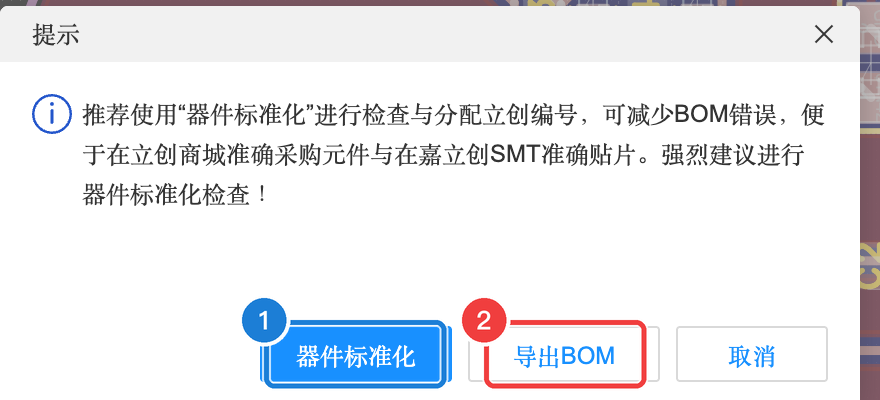
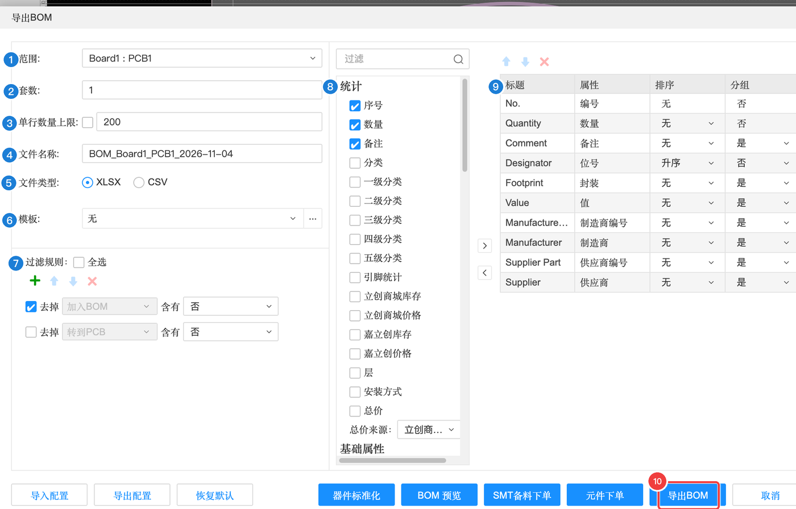
导出 BOM 对话框
| 编号 | 属性 | 含义（大白话） | 本例怎么填 | 什么时候需要改 |
|---|---|---|---|---|
| 1 | 范围 | 导出哪块板子 | Board1 : PCB1 | 工程里有多块板时 |
| 2 | 套数 | 要做几套，数量列会乘上这个数 | 1 | 一次做多套时 |
| 3 | 单行数量上限 | 同一种元件合并成一行时，一行最多多少个 | 200 | — |
| 4 | 文件名称 | 导出的文件名 | BOM_Board1_PCB1_日期 | 随意 |
| 5 | 文件类型 | XLSX（Excel）或 CSV | XLSX | — |
| 6 | 模板 | 用自定义的 BOM 格式模板 | 无 | 公司有固定格式时 |
| 7 | 过滤规则 | 不导出哪些元件：默认去掉“加入BOM = 否”和“转到PCB = 否”的 | 默认 | — |
| 8 | 统计 | 勾选额外要统计的列：库存、价格、总价、安装方式…… | 默认 | 想顺便算总价时勾上价格 |
| 9 | 列配置 | 每一列的标题、对应哪个属性、排序、分组：No.、Quantity（数量）、Comment、Designator（位号）、Footprint（封装）、Value（值）、Manufacturer Part、Manufacturer、Supplier Part（C 编号）、Supplier | 默认 | — |
| 10 | 导出BOM | 下载 BOM 文件 | 点它 | — |
| 器件标准化 / BOM预览 / SMT备料下单 / 元件下单 | 「BOM预览」先在页面里看看表格；「SMT备料下单」「元件下单」是按这份 BOM 去嘉立创 / 立创商城下单的快捷入口（手焊路线买元件可以用「元件下单」） | — | 路线 ② 买元件时 |
导出的 BOM 就是 A-0 里那张表：11 行，每行一种元件，位号、数量、封装、制造商、C 编号一应俱全。
A10.4 导出坐标文件#
- 「导出」→「坐标文件(CPL)…」，保持默认，点「导出」
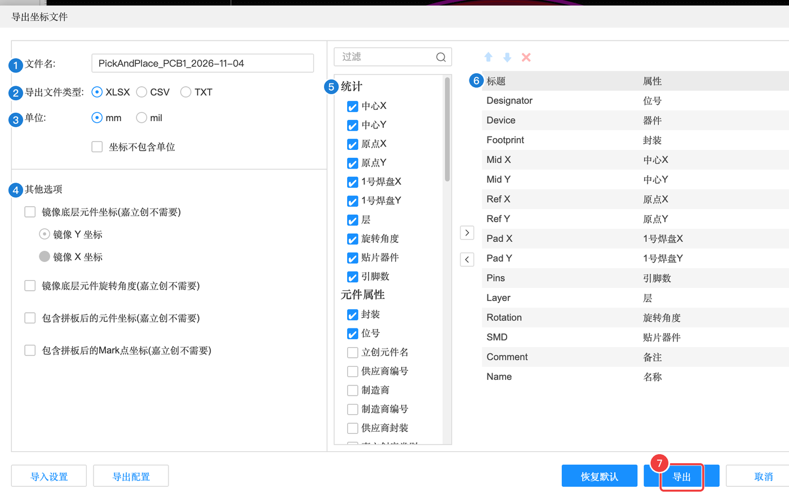
导出坐标文件对话框
| 编号 | 属性 | 含义（大白话） | 本例怎么填 | 什么时候需要改 |
|---|---|---|---|---|
| 1 | 文件名 | 导出的文件名 | PickAndPlace_PCB1_日期 | — |
| 2 | 导出文件类型 | XLSX / CSV / TXT | XLSX | — |
| 3 | 单位 | mm 或 mil；还可以勾选“坐标不包含单位” | 默认 | 工厂有要求时 |
| 4 | 其他选项 | 镜像底层元件坐标、镜像底层旋转角度、包含拼板后的坐标 / Mark 点坐标——括号里都写着“嘉立创不需要” | 都不勾 | 给其他工厂时看对方要求 |
| 5 | 统计 | 要导出哪些数据：中心 X/Y、原点 X/Y、1 号焊盘 X/Y、层、旋转角度、贴片器件、引脚数，以及元件属性（封装、位号、供应商编号…） | 默认 | — |
| 6 | 列配置 | 列标题：Designator、Device、Footprint、Mid X、Mid Y、Ref X、Ref Y、Pad X、Pad Y、Pins、Layer、Rotation、SMD、Comment、Name | 默认 | — |
| 7 | 导出 | 下载 | 点它 | — |
A10.5 一键跳转嘉立创 PCB 下单#
- 「导出」→「PCB制板文件(Gerber)…」，这次点「PCB下单」
- 提示“下单数据（Gerber、坐标文件、BOM）生成完毕”，点「确认」
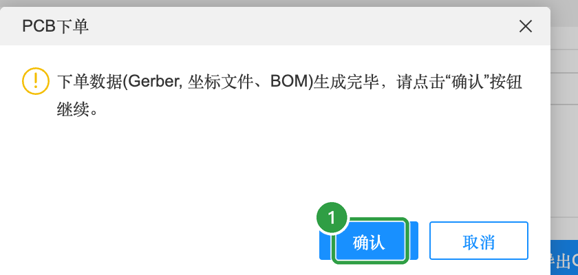
浏览器会打开 www.jlc.com 的「PCB 在线下单」页面，文件已经自动上传，层数、尺寸也自动识别好了。第一次打开会有“新版PCB下单上线啦”弹窗和页面导航引导，点「开始体验」→「跳过」就行。
基本信息#
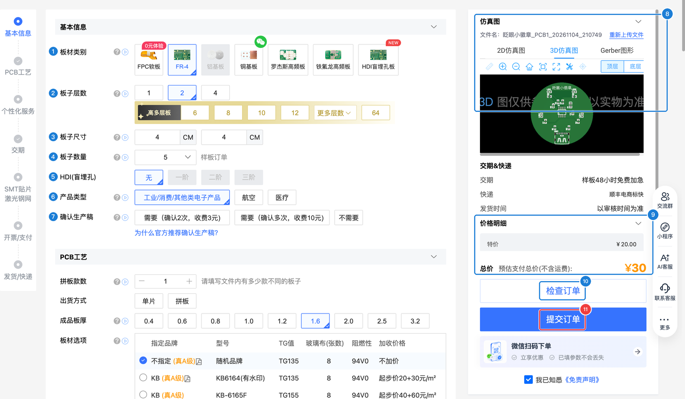
基本信息
| 编号 | 参数 | 含义（大白话） | 本例 | 要不要改 |
|---|---|---|---|---|
| 1 | 板材类别 | 板子用什么材料：FR-4 是最常见的玻纤板；还有 FPC 软板、铝基板（散热好）、高频板等 | FR-4 | 保持默认 |
| 2 | 板子层数 | 几层铜 | 2（自动识别） | 不改 |
| 3 | 板子尺寸 | 长 × 宽 | 4 × 4 cm（自动识别） | 不改 |
| 4 | 板子数量 | 做几片。打样一般 5 片起 | 5 | 保持默认 |
| 5 | HDI（盲埋孔） | 高密度板的特殊工艺 | 无 | 不改 |
| 6 | 产品类型 | 用途：工业 / 消费 / 其他类电子产品，航空，医疗 | 工业/消费/其他 | 不改 |
| 7 | 确认生产稿 | 工厂生产前把生产稿发给你确认：需要（确认 2 次，收费 3 元）/ 需要（确认多次，收费 10 元）/ 不需要 | 按页面默认 | 第一次下单想更放心可以选需要 |
| 8 | 仿真图 | 2D 仿真图 / 3D 仿真图 / Gerber 图形：根据你的文件生成的效果图，下单前最后看一眼 | — | — |
| 9 | 交期 & 快递 / 价格明细 | 本例：样板 48 小时免费加急，顺丰电商标快；特价 ¥20 + 品质赔付费 ¥10 = 预估 ¥30 | — | — |
| 10 | 检查订单 | 提交前让系统检查一遍参数 | — | — |
| 11 | 提交订单 | 真正下单付款 | 本教程没有点 | 你确认无误后再点 |
PCB 工艺#
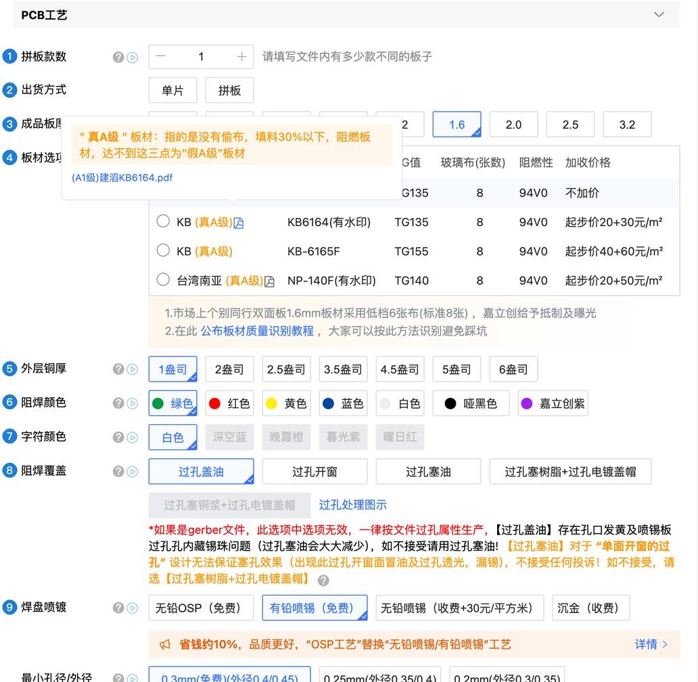
PCB 工艺
| 编号 | 参数 | 含义（大白话） | 本例 | 要不要改 |
|---|---|---|---|---|
| 1 | 拼板款数 | 文件里有几款不同的板子 | 1 | 不改 |
| 2 | 出货方式 | 单片：一片一片的；拼板：几片连在一起 | 单片 | 不改（SMT 时工厂可能会自己加工艺边） |
| 3 | 成品板厚 | 0.4 ~ 3.2 mm | 1.6 mm | 🎨 想要薄一点的徽章可以选 1.0 / 1.2（以页面价格为准） |
| 4 | 板材选项 | 板材品牌、TG 值等 | 默认 | 保持默认 |
| 5 | 外层铜厚 | 铜箔厚度，1 盎司 ≈ 0.035 mm | 1 盎司 | 保持默认 |
| 6 | 阻焊颜色 | 板子的颜色：绿 / 红 / 黄 / 蓝 / 白 / 哑黑 / 嘉立创紫 | 绿色 | 🎨 随便选，看页面价格是否有差别 |
| 7 | 字符颜色 | 丝印文字的颜色 | 白色 | 🎨 可选（和阻焊颜色有搭配限制，以页面为准） |
| 8 | 阻焊覆盖 | 过孔表面怎么处理：过孔盖油、开窗、塞油、塞树脂… | 默认 | 保持默认 |
| 9 | 焊盘喷镀 | 焊盘表面处理：无铅 OSP（免费）、有铅喷锡（免费）、无铅喷锡（收费）、沉金（收费，金色、更平整） | 默认 | 🎨 想要金色焊盘可选沉金（加钱） |
| 最小孔径 / 金手指斜边 / 线路测试 | 页面下方还有这些选项 | 默认 | 保持默认 |
交期、SMT、开票与支付#
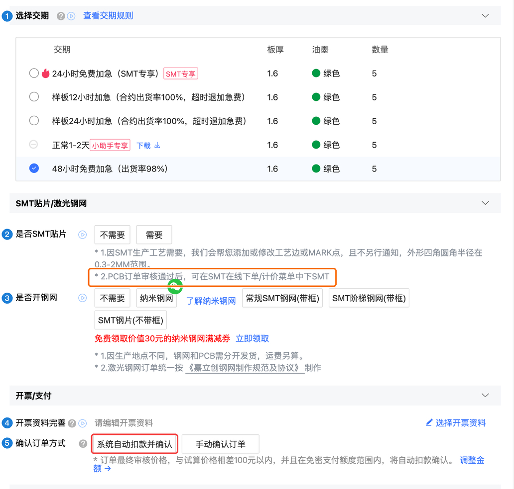
交期 / SMT / 支付
| 编号 | 参数 | 含义（大白话） | 本例 | 要不要改 |
|---|---|---|---|---|
| 1 | 选择交期 | 多快做好：样板 12 小时 / 24 小时加急（收费）、正常 1-2 天、48 小时免费加急等 | 48 小时免费加急 | 不急就用免费的 |
| 2 | 是否SMT贴片 | 要不要工厂帮你焊元件 | 不需要（PCB 单独下） | 见下面的提醒 |
| 3 | 是否开钢网 | 钢网是刷锡膏用的钢片，自己用热风枪/加热台焊贴片元件时才需要 | 不需要 | 路线 ② 想用锡膏焊时 |
| 4 | 开票资料 | 需要发票时填写 | — | — |
| 5 | 确认订单方式 | 「系统自动扣款并确认」或「手动确认订单」 | 默认是自动扣款 | ⚠️ 建议改成手动确认 |
发货与快递#
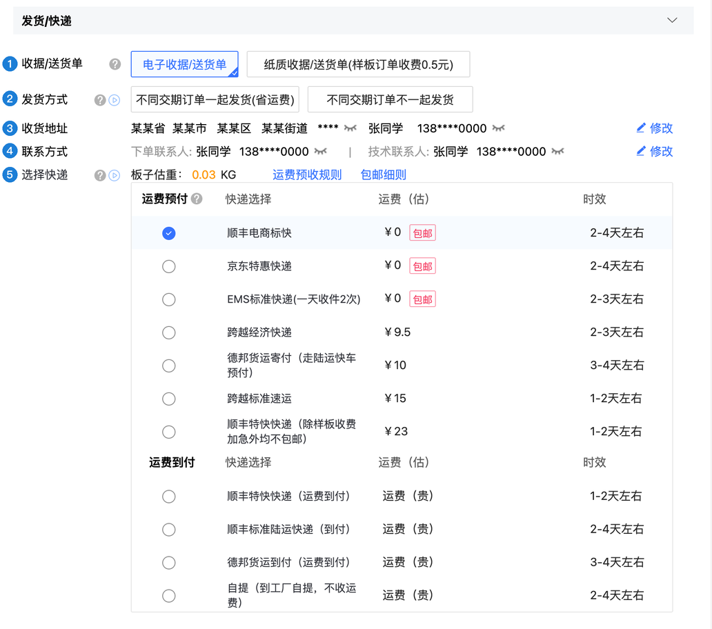
发货 / 快递
| 编号 | 参数 | 含义 | 建议 |
|---|---|---|---|
| 1 | 收据 / 送货单 | 电子的免费；纸质的样板收 0.5 元 | 电子 |
| 2 | 发货方式 | 不同交期的订单一起发（省运费）还是分开发 | 默认 |
| 3 | 收货地址 | 寄到哪 | 填你自己的 |
| 4 | 联系方式 | 下单联系人、技术联系人（工厂有问题会联系） | 填你自己的 |
| 5 | 选择快递 | 运费预付 / 到付，各家快递的运费和时效 | 实测「顺丰电商标快」包邮，2-4 天 |